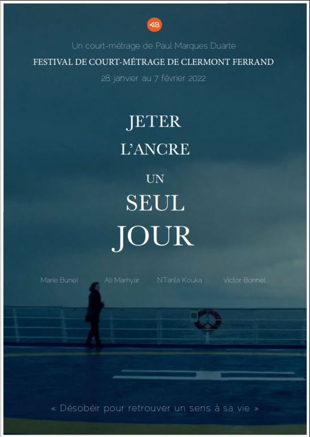
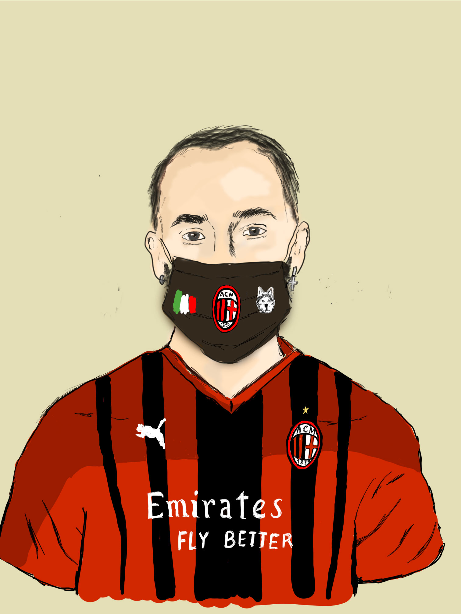
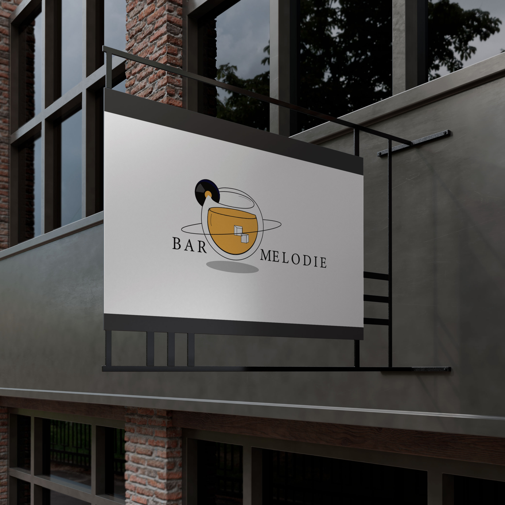
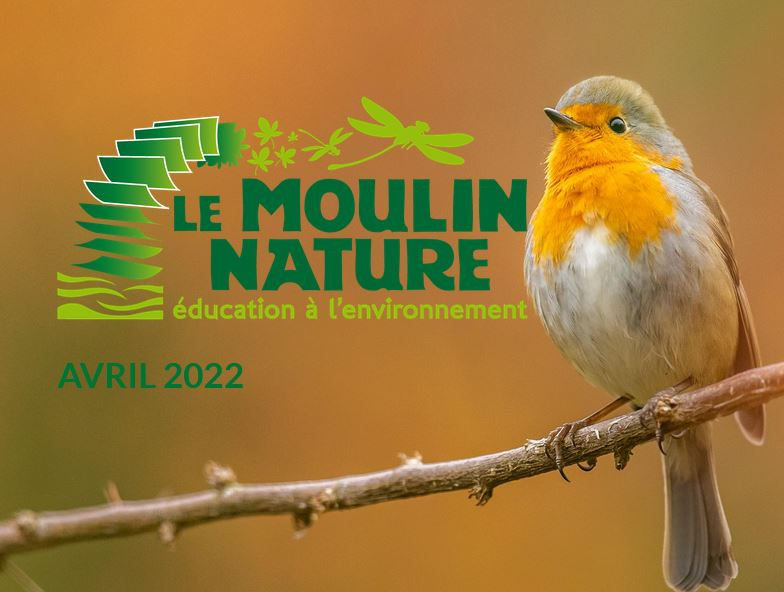
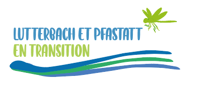
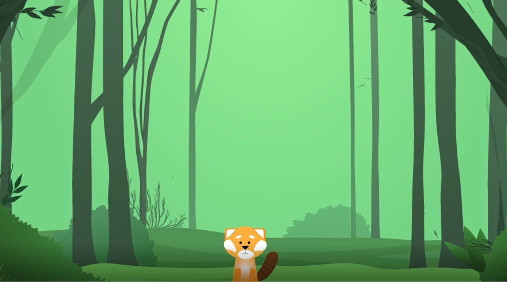
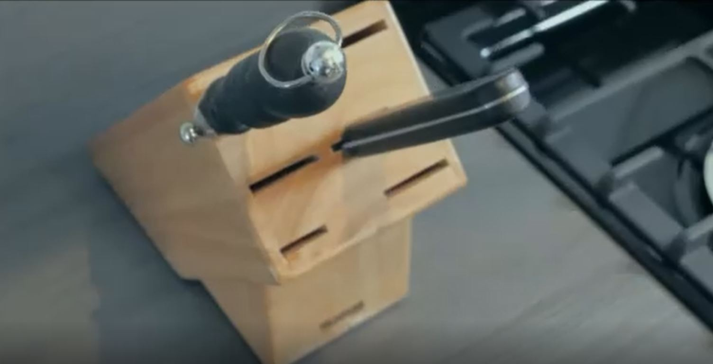

À propos de moi

- Name: Mélodie Chantely
- Job: Étudiante apprentie
- Age: 20 ans
- Nationalité: Française
- Ville natale: Mulhouse, France
Hello 👋 Je m'appelle Mélodie et cette année j'ai intégré la Licence Professionnelle Chargée de communication à Mulhouse. J'ai également la chance d'être apprentie pour une deuxième année au sein du Moulin Nature à Lutterbach.
Après l'obtention de mon Bac S en 2020, j'ai poursuivi mes études avec cette formation s'intéressant au monde du web et du multimédia. De nature curieuse, j'ai acquis énormément de compétences diverses dans le domaine du web, que ce soit en design, en audiovisuel, et plus particulièrement en communication web.
J'aime l'élaboration de contenu graphique photo ou vidéo et de communication digitale sur Internet, ces axes de la formation MMI sont mes activités et centres d'intérêts principaux. Ce que j'aime par-dessus tout, c'est le côté créatif des métiers de la communication. Vous découvrez dans ce site, l'ensemble de mes réalisations !
{kind=link}
Mes passions
Musique
La musique est l'une de mes plus grandes passions et occupe sans aucun doute une grande place dans ma vie. Je fais de la guitare classique depuis l'age de 9 ans.
Photographie
Ce qui me passionne dans la photographie c'est le fait d'immortaliser des moments importants de notre vie. J'ai investi dans un appareil photo argentique et je prend beaucoup de plaisir à m'en servir !
Cinéma
L'univers du cinéma est tout aussi passionnant pour moi. Il nous emmène dans une autre dimension et nous permet de retranscrire des histoires et détails qu'on ne verra pas sur une photo.
Mes compétences linguistiques
Français
Anglais
Allemand
Espagnol
Parcours Scolaire
-
Licence Professionnelle Chargée de communication
IUT Mulhouse 2022-2023Année en cours. Diplôme prévu pour juin 2023.
-
2e année DUT MMI
IUT Mulhouse 2021-2022Diplôme obtenu en juin 2022.
-
1e année DUT MMI
IUT Mulhouse 2020-2021Première année validée.
-
Baccalauréat Scientifique
Lycée Lambert de Mulhouse 2020Obtention du Baccalauréat scientifique avec spécialité SVT et mention Section européenne en anglais (B1).
Mon Experience
-
Chargée de Communication
Apprentie chez Moulin Nature Février à Août 2022Création de contenu pour le web : retouche photo et montage vidéo sur Photoshop et Premiere Pro. Mises en lignes d'articles sur le site et postes sur Facebook. Elaboration de flyers et d'affiches sur InDesgin et Canva.
-
Community Manager
Stagiaire chez Quai des Brunes Hommes Été 2021Développement et animation de la marque sur Internet. Conception de stories, sondages, postes photos et vidéos pour les réseaux sociaux.
-
Animatrice
Créa de Kingersheim Juillet 2020Prise en charge d'enfants, création et préparation de jeu et d’activité adapté et accompagnement aux sorties de groupe.
Mes Compétences
Photoshop
Illustrator
Premiere Pro
Logiciel de bureautique
After Effect
After Effect
WordPress
Mes Travaux
-

-

-

-

-
 Voir affiche
Voir affiche
Affiche
J'ai plusieurs été amenés à faire des affiches pour différents événements. Cette affiche a été réalisée sur la plateforme Canva.
-

-

-
